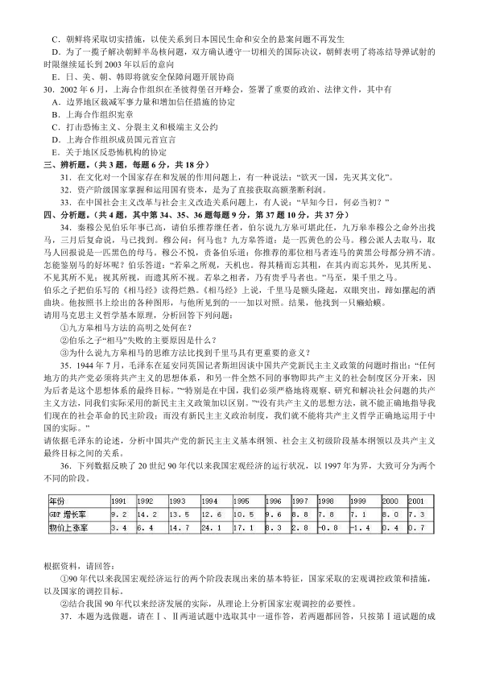

第 1 / 5 页

2003 年全国硕士研究生入学考试政治试题及解析
一、下列每题的选项中，有一项是最符合题意的。（每小题1 分，共15 分）
1．马克思主义哲学创立后，开始出现了
A．唯物论与唯心论的对立
B．可知论与不可知论的对立
C．辩证法与形而上学的对立
D．唯物史观与唯心史观的对立
2．在人与世界的相互作用中，人与世界同时得到了改变，并获得日益丰富的内容。造成这一变化的基础是
A．自然界自身的运动
B．人的意识的能动作用
C．人的实践活动
D．工具的制造与使用
3．人的视觉感官有感觉外界物体的光和颜色的功能。可见光的波长范围一般是380nm（纳米）～780nm，
称为可见光谱。在可见光谱范围内，不同波长的辐射使人感觉到不同的颜色，一般来说，700nm 为红色，
580nm 为黄红，510nm 为绿色，470nm 为蓝色，400nm 为紫色。这种现象表明
A．人只能认识外界物体作用于感官形成的感觉
B．人的感觉所具有的生理阀限是人的认识能力的界限
C．人的感觉中包含着对外界事物信息的选择，加工和转换
D．人所形成的关于事物的感觉是人自身生理活动的结果
4．生产力的社会条件中，最基本最重要的是
A．政治法律制度
B．生产关系
C．历史文化传统
D．伦理道德规范
5．商品内在的使用价值和价值的矛盾，其完备的外在表现是
A．商品与商品的对立
B．具体劳动与抽象劳动的的对立
C．私人劳动与社会劳动的对立
D．商品与货币的对立
6．
根据上述材料该企业预付资本总周转次数为
A．1．0 次
B．1．2 次
C．1．3 次
D．1．4 次
7．在土地的资本主义经营垄断下，由于在同一块土地上连续追加投资的劳动生产率不同而形成的地租是
A．级差地租Ⅰ
B．级差地租Ⅱ
C．绝对地租
D．垄断地租
8．中国共产党领导的新民主主义革命的根本目的是
A．推翻帝国主义、封建主义和官僚资本主义的统治
B．改变中国半殖民地半封建社会的面貌
C．建立新民主主义的人民共和国
D．解放被束缚的生产力
查看 / 复制本页文字
2003 年全国硕士研究生入学考试政治试题及解析 一、下列每题的选项中，有一项是最符合题意的。（每小题1 分，共15 分） 1．马克思主义哲学创立后，开始出现了 A．唯物论与唯心论的对立 B．可知论与不可知论的对立 C．辩证法与形而上学的对立 D．唯物史观与唯心史观的对立 2．在人与世界的相互作用中，人与世界同时得到了改变，并获得日益丰富的内容。造成这一变化的基础是 A．自然界自身的运动 B．人的意识的能动作用 C．人的实践活动 D．工具的制造与使用 3．人的视觉感官有感觉外界物体的光和颜色的功能。可见光的波长范围一般是380nm（纳米）～780nm， 称为可见光谱。在可见光谱范围内，不同波长的辐射使人感觉到不同的颜色，一般来说，700nm 为红色， 580nm 为黄红，510nm 为绿色，470nm 为蓝色，400nm 为紫色。这种现象表明 A．人只能认识外界物体作用于感官形成的感觉 B．人的感觉所具有的生理阀限是人的认识能力的界限 C．人的感觉中包含着对外界事物信息的选择，加工和转换 D．人所形成的关于事物的感觉是人自身生理活动的结果 4．生产力的社会条件中，最基本最重要的是 A．政治法律制度 B．生产关系 C．历史文化传统 D．伦理道德规范 5．商品内在的使用价值和价值的矛盾，其完备的外在表现是 A．商品与商品的对立 B．具体劳动与抽象劳动的的对立 C．私人劳动与社会劳动的对立 D．商品与货币的对立 6． 根据上述材料该企业预付资本总周转次数为 A．1．0 次 B．1．2 次 C．1．3 次 D．1．4 次 7．在土地的资本主义经营垄断下，由于在同一块土地上连续追加投资的劳动生产率不同而形成的地租是 A．级差地租Ⅰ B．级差地租Ⅱ C．绝对地租 D．垄断地租 8．中国共产党领导的新民主主义革命的根本目的是 A．推翻帝国主义、封建主义和官僚资本主义的统治 B．改变中国半殖民地半封建社会的面貌 C．建立新民主主义的人民共和国 D．解放被束缚的生产力
第 2 / 5 页
9．在中国革命进程中，具有新民主主义革命和社会主义革命双重性质的事件是
A．没收地主阶级的土地归农民所有
B．没收官僚资本归新民主主义国家所有
C．没收帝国主义在华企业归新民主主义国家所有
D．赎买民族工商业归人民民主专政国家所有
10．20 世纪90 年代，我国对外开放进入新阶段的标志是
A．形成全方位，多层次，宽领域的对外开放格局
B．我国进入世界十大贸易国行列
C．引进外资规模居发展中国家首位
D．形成沿海、沿江、沿边对外开放的新格局
11．发展社会主义民主政治，最根本的是要
A．坚持党的领导，人民当家作主和依法治国的有机统一
B．实现民主政治的制度化、规范化、程序化
C．充分发挥人民群众的监督作用
D．有领导、有步骤地推进政治体制改革
12．在社会主义初级阶段，非公有制经济是
A．社会主义公有制经济的补充
B．社会主义市场经济的重要组成部分
C．具有公有性质的经济
D．逐步向公有制过渡的经济
13．我国经济与社会发展的根本出发点是
A．解放和发展生产力
B．巩固社会主义制度
C．提高人民生活水平
D．增强综合国力
14．中国共产党十六大报告指出，贯彻“三个代表”重要思想，本质在
A．坚持以经济建设为中心
B．坚持四项基本原则
C．坚持改革开放
D．坚持执政为民
15．中国共产党十六大报告指出，中国共产党坚持先进性和增强创造力的决定性因素是
A．坚持党的思想路线，解放思想、实事求是、与时俱进
B．搞清楚什么是社会主义以及如何建设社会主义
C．坚持党的基本路线和纲领
D．加强和改进新形势下党的群众工作，巩固党的执政基础
二、下列每题的选项中，至少有一项是符合题意的。（每小题2 分，共30 分）
16．西周末年思想家史伯说“和实生物，同则不继，以它平它谓之和，故能丰长而物归之”。这里所包含的辩
证法思想有
A．矛盾的同一是包含差别的同一
B．对立面的同一是事物发展的动力
C．不包含内部差别的事物就不能存在和发展
D．矛盾的一方只有克服另一方才能达到统一
E．事物是由不同方面、不同要素构成的统一体
17．下列有关历史创造者的观点中，属于唯物史观的有
A．人人创造历史
B．历史活动是群众的事业
C．人们自己创造自己的历史
D．人们总是在既定条件下创造历史
E．尊重社会发展规律与尊重人民群众历史主体地位是一致的
18．价值规律发挥作用的表现形式有
A．价格围绕价值上下波动
B．价格围绕交换价值上下波动
C．价格围绕成本价格上下波动
D．市场价格围绕生产价格上下波动
E．市场价格围绕垄断价格上下波动
19．G－W－G’之所以被称为资本的总公式，是因为它
A．既包括买的过程，又包括卖的过程
B．既包括商品运动，又包括货币运动
查看 / 复制本页文字
9．在中国革命进程中，具有新民主主义革命和社会主义革命双重性质的事件是 A．没收地主阶级的土地归农民所有 B．没收官僚资本归新民主主义国家所有 C．没收帝国主义在华企业归新民主主义国家所有 D．赎买民族工商业归人民民主专政国家所有 10．20 世纪90 年代，我国对外开放进入新阶段的标志是 A．形成全方位，多层次，宽领域的对外开放格局 B．我国进入世界十大贸易国行列 C．引进外资规模居发展中国家首位 D．形成沿海、沿江、沿边对外开放的新格局 11．发展社会主义民主政治，最根本的是要 A．坚持党的领导，人民当家作主和依法治国的有机统一 B．实现民主政治的制度化、规范化、程序化 C．充分发挥人民群众的监督作用 D．有领导、有步骤地推进政治体制改革 12．在社会主义初级阶段，非公有制经济是 A．社会主义公有制经济的补充 B．社会主义市场经济的重要组成部分 C．具有公有性质的经济 D．逐步向公有制过渡的经济 13．我国经济与社会发展的根本出发点是 A．解放和发展生产力 B．巩固社会主义制度 C．提高人民生活水平 D．增强综合国力 14．中国共产党十六大报告指出，贯彻“三个代表”重要思想，本质在 A．坚持以经济建设为中心 B．坚持四项基本原则 C．坚持改革开放 D．坚持执政为民 15．中国共产党十六大报告指出，中国共产党坚持先进性和增强创造力的决定性因素是 A．坚持党的思想路线，解放思想、实事求是、与时俱进 B．搞清楚什么是社会主义以及如何建设社会主义 C．坚持党的基本路线和纲领 D．加强和改进新形势下党的群众工作，巩固党的执政基础 二、下列每题的选项中，至少有一项是符合题意的。（每小题2 分，共30 分） 16．西周末年思想家史伯说“和实生物，同则不继，以它平它谓之和，故能丰长而物归之”。这里所包含的辩 证法思想有 A．矛盾的同一是包含差别的同一 B．对立面的同一是事物发展的动力 C．不包含内部差别的事物就不能存在和发展 D．矛盾的一方只有克服另一方才能达到统一 E．事物是由不同方面、不同要素构成的统一体 17．下列有关历史创造者的观点中，属于唯物史观的有 A．人人创造历史 B．历史活动是群众的事业 C．人们自己创造自己的历史 D．人们总是在既定条件下创造历史 E．尊重社会发展规律与尊重人民群众历史主体地位是一致的 18．价值规律发挥作用的表现形式有 A．价格围绕价值上下波动 B．价格围绕交换价值上下波动 C．价格围绕成本价格上下波动 D．市场价格围绕生产价格上下波动 E．市场价格围绕垄断价格上下波动 19．G－W－G’之所以被称为资本的总公式，是因为它 A．既包括买的过程，又包括卖的过程 B．既包括商品运动，又包括货币运动
第 3 / 5 页
C．概括了各种资本运动的一般特征
D．概括了资本流通与商品流通的共同特征
E．体现了资本运动的根本目的
20．在其他条件不便的情况下，资本有机构成的提高会导致
A．相对过剩人口的形成
B．利润率提高
C．可变资本在总资本中的比例的降低
D．资本周转速度的减缓
E．平均利润率下降
21．股票价格
A．与银行存款利息率成反比
B．与预期股息收入成正比
C．是股息收入的资本化
D．是它所代表的实际资本价值的货币表现
E．不是股票的票面额
22．毛泽东思想、邓小平理论是中国化了的马克思主义，它们都
A．体现了马克思列宁主义的基本原理
B．反映了近代中国的时代要求
C．揭示了中国革命的特殊规律
D．包含了中华民族的优秀思想
E．包含了中国共产党人的实践经验
23．1945 年4 月，毛泽东在《论联合政府》中提出的党的优良作风有
A．理论和实践相结合的作风
B．和人民群众紧密地联系在一起的作风
C．谦虚、谨慎、戒骄、戒躁的作风
D．自我批评的作风
E．艰苦奋斗的作风
24．在社会主义条件下，中国共产党与各民主党派长期共存，是因为
A．无产阶级政党可以与资产阶级结成统一战线
B．双方已有长期团结合作的历史
C．各民主党派已成为致力于社会主义事业的党派
D．各民主党派在政治上接受了共产党领导
E．各民主党派可以发挥对共产党的监督作用
25．我国现阶段分配制度中，按生产要素分配的依据是
A．存在多种所有制经济
B．社会主义市场经济的要求
C．各种生产要素都具有价值
D．实行多种经营方式的要求
E．各种生产要素在生产过程中都做出贡献
26．发展之所以成为中国共产党执政兴国的第一要务，是因为
A．发展是坚持党的先进性的要求
B．发展是发挥社会主义制度优越性的要求
C．发展是社会主义本质的要求
D．发展决定着中国的前途和命运
E．发展是实现民富国强的要求
27．中国共产党十六大报告提出的全面建设小康社会的目标有
A．国内生产总值至2020 年比2000 年翻两番
B．依法治国基本方略得到全面落实
C．全民族的思想道德素质、科学文化素质和健康素质明显提高
D．推动整个社会走上生产发展，生活富裕，生态良好的文明发展道路
E．基本实现现代化，建成富强民主文明的社会主义国家
28．中国共产党十六大提出建立公正合理的国际政治经济新秩序的主张有
A．政治上应相互尊重，共同协商
B．经济上应相互促进，共同发展
C．文化上应相互借鉴，共同繁荣
D．安全上应相互信任，共同维护
E．反对各种形式的霸权主义和强权政治
29．2002 年9 月17 日，日本首相小泉纯一郎对朝鲜进行访问，发表《日朝平壤宣言》，《宣言》除决定重开
日朝邦交正常化谈判外，其他内容还有
A．日本政府对过去在朝鲜实施的殖民统治表示深刻反省和诚挚道歉，在邦交正常化的谈判中真诚地就两
国经济合作具体内容和规模进行协商
B．对于1945 年以前发生的事，双方相互放弃一切财产损失追索权
查看 / 复制本页文字
C．概括了各种资本运动的一般特征 D．概括了资本流通与商品流通的共同特征 E．体现了资本运动的根本目的 20．在其他条件不便的情况下，资本有机构成的提高会导致 A．相对过剩人口的形成 B．利润率提高 C．可变资本在总资本中的比例的降低 D．资本周转速度的减缓 E．平均利润率下降 21．股票价格 A．与银行存款利息率成反比 B．与预期股息收入成正比 C．是股息收入的资本化 D．是它所代表的实际资本价值的货币表现 E．不是股票的票面额 22．毛泽东思想、邓小平理论是中国化了的马克思主义，它们都 A．体现了马克思列宁主义的基本原理 B．反映了近代中国的时代要求 C．揭示了中国革命的特殊规律 D．包含了中华民族的优秀思想 E．包含了中国共产党人的实践经验 23．1945 年4 月，毛泽东在《论联合政府》中提出的党的优良作风有 A．理论和实践相结合的作风 B．和人民群众紧密地联系在一起的作风 C．谦虚、谨慎、戒骄、戒躁的作风 D．自我批评的作风 E．艰苦奋斗的作风 24．在社会主义条件下，中国共产党与各民主党派长期共存，是因为 A．无产阶级政党可以与资产阶级结成统一战线 B．双方已有长期团结合作的历史 C．各民主党派已成为致力于社会主义事业的党派 D．各民主党派在政治上接受了共产党领导 E．各民主党派可以发挥对共产党的监督作用 25．我国现阶段分配制度中，按生产要素分配的依据是 A．存在多种所有制经济 B．社会主义市场经济的要求 C．各种生产要素都具有价值 D．实行多种经营方式的要求 E．各种生产要素在生产过程中都做出贡献 26．发展之所以成为中国共产党执政兴国的第一要务，是因为 A．发展是坚持党的先进性的要求 B．发展是发挥社会主义制度优越性的要求 C．发展是社会主义本质的要求 D．发展决定着中国的前途和命运 E．发展是实现民富国强的要求 27．中国共产党十六大报告提出的全面建设小康社会的目标有 A．国内生产总值至2020 年比2000 年翻两番 B．依法治国基本方略得到全面落实 C．全民族的思想道德素质、科学文化素质和健康素质明显提高 D．推动整个社会走上生产发展，生活富裕，生态良好的文明发展道路 E．基本实现现代化，建成富强民主文明的社会主义国家 28．中国共产党十六大提出建立公正合理的国际政治经济新秩序的主张有 A．政治上应相互尊重，共同协商 B．经济上应相互促进，共同发展 C．文化上应相互借鉴，共同繁荣 D．安全上应相互信任，共同维护 E．反对各种形式的霸权主义和强权政治 29．2002 年9 月17 日，日本首相小泉纯一郎对朝鲜进行访问，发表《日朝平壤宣言》，《宣言》除决定重开 日朝邦交正常化谈判外，其他内容还有 A．日本政府对过去在朝鲜实施的殖民统治表示深刻反省和诚挚道歉，在邦交正常化的谈判中真诚地就两 国经济合作具体内容和规模进行协商 B．对于1945 年以前发生的事，双方相互放弃一切财产损失追索权
第 4 / 5 页

C．朝鲜将采取切实措施，以使关系到日本国民生命和安全的悬案问题不再发生
D．为了一揽子解决朝鲜半岛核问题，双方确认遵守一切相关的国际决议，朝鲜表明了将冻结导弹试射的
时限继续延长到2003 年以后的意向
E．日、美、朝、韩即将就安全保障问题开展协商
30．2002 年6 月，上海合作组织在圣彼得堡召开峰会，签署了重要的政治、法律文件，其中有
A．边界地区裁减军事力量和增加信任措施的协定
B．上海合作组织宪章
C．打击恐怖主义、分裂主义和极端主义公约
D．上海合作组织成员国元首宣言
E．关于地区反恐怖机构的协定
三、辨析题。（共3 题，每题6 分，共18 分）
31．在文化对一个国家存在和发展的作用问题上，有一种说法：“欲灭一国，先灭其文化”。
32．资产阶级国家掌握和运用国有资本，是为了直接获取高额垄断利润。
33．在中国社会主义改革与社会主义改造关系问题上，有人说：“早知今日，何必当初？”
四、分析题。（共4 题，其中第34、35、36 题每题9 分，第37 题10 分，共37 分）
34．秦穆公见伯乐年事已高，请伯乐推荐继任者，伯尔说九方皋可堪此任，九万皋奉穆公之命外出找
马，三月后复命说，马已找到。穆公问：何马也？九方皋答道：是一匹黄色的公马。穆公派人去取马，取
马人回报说是一匹黑色的母马。穆公不悦，责备伯乐道：你推荐的那位相马者连马的黄黑公母都分辨不清。
怎能鉴别马的好坏呢？伯乐答道：“若皋之所观，天机也。得其精而忘其粗，在其内而忘其外，见其所见、
不见其所不见；视其所视，而遗其所不视。若皋之相者，乃有贵乎马者也。”马至，果千里之马。
伯乐之子把伯乐写的《相马经》读得烂熟。《相马经》上说，千里马是额头隆起，双眼突出，蹄如摞起的酒
曲块。他按照书上绘出的各种图形，与他所见到的一一加以对照。结果，他找到一只癞蛤蟆。
请用马克思主义哲学基本原理，分析回答下列问题：
①九方皋相马方法的高明之处何在？
②伯乐之子“相马”失败的主要原因是什么？
③为什么说九方皋相马的思维方法比找到千里马具有更重要的意义？
35．1944 年7 月，毛泽东在延安同英国记者斯坦因谈中国共产党新民主主义政策的问题时指出：“任何
地方的共产党必须将共产主义的思想体系，和另一件全然不同的事物即共产主义的社会制度区分开来，因
为后者是这个思想体系的最终目标。”“特别是在中国，我们必须严格地将观察、研究和解决社会问题的共产
主义方法，同我们实际采用的新民主主义政策加以区别。”“没有共产主义的思想方法，就不能正确地指导我
们现在的社会革命的民主阶段；而没有新民主主义政治制度，我们就不能将共产主义哲学正确地运用于中
国的实际。”
请依据毛泽东的论述，分析中国共产党的新民主主义基本纲领、社会主义初级阶段基本纲领以及共产主义
最终目标之间的关系。
36．下列数据反映了20 世纪90 年代以来我国宏观经济的运行状况，以1997 年为界，大致可分为两个
不同的阶段。
根据资料，请回答：
①90 年代以来我国宏观经济运行的两个阶段表现出来的基本特征，国家采取的宏观调控政策和措施，
以及国家的调控目标。
②结合我国90 年代以来经济发展的实际，从理论上分析国家宏观调控的必要性。
37．本题为选做题，请在Ⅰ、Ⅱ两道试题中选取其中一道作答，若两题都回答，只按第Ⅰ道试题的成
查看 / 复制本页文字
C．朝鲜将采取切实措施，以使关系到日本国民生命和安全的悬案问题不再发生 D．为了一揽子解决朝鲜半岛核问题，双方确认遵守一切相关的国际决议，朝鲜表明了将冻结导弹试射的 时限继续延长到2003 年以后的意向 E．日、美、朝、韩即将就安全保障问题开展协商 30．2002 年6 月，上海合作组织在圣彼得堡召开峰会，签署了重要的政治、法律文件，其中有 A．边界地区裁减军事力量和增加信任措施的协定 B．上海合作组织宪章 C．打击恐怖主义、分裂主义和极端主义公约 D．上海合作组织成员国元首宣言 E．关于地区反恐怖机构的协定 三、辨析题。（共3 题，每题6 分，共18 分） 31．在文化对一个国家存在和发展的作用问题上，有一种说法：“欲灭一国，先灭其文化”。 32．资产阶级国家掌握和运用国有资本，是为了直接获取高额垄断利润。 33．在中国社会主义改革与社会主义改造关系问题上，有人说：“早知今日，何必当初？” 四、分析题。（共4 题，其中第34、35、36 题每题9 分，第37 题10 分，共37 分） 34．秦穆公见伯乐年事已高，请伯乐推荐继任者，伯尔说九方皋可堪此任，九万皋奉穆公之命外出找 马，三月后复命说，马已找到。穆公问：何马也？九方皋答道：是一匹黄色的公马。穆公派人去取马，取 马人回报说是一匹黑色的母马。穆公不悦，责备伯乐道：你推荐的那位相马者连马的黄黑公母都分辨不清。 怎能鉴别马的好坏呢？伯乐答道：“若皋之所观，天机也。得其精而忘其粗，在其内而忘其外，见其所见、 不见其所不见；视其所视，而遗其所不视。若皋之相者，乃有贵乎马者也。”马至，果千里之马。 伯乐之子把伯乐写的《相马经》读得烂熟。《相马经》上说，千里马是额头隆起，双眼突出，蹄如摞起的酒 曲块。他按照书上绘出的各种图形，与他所见到的一一加以对照。结果，他找到一只癞蛤蟆。 请用马克思主义哲学基本原理，分析回答下列问题： ①九方皋相马方法的高明之处何在？ ②伯乐之子“相马”失败的主要原因是什么？ ③为什么说九方皋相马的思维方法比找到千里马具有更重要的意义？ 35．1944 年7 月，毛泽东在延安同英国记者斯坦因谈中国共产党新民主主义政策的问题时指出：“任何 地方的共产党必须将共产主义的思想体系，和另一件全然不同的事物即共产主义的社会制度区分开来，因 为后者是这个思想体系的最终目标。”“特别是在中国，我们必须严格地将观察、研究和解决社会问题的共产 主义方法，同我们实际采用的新民主主义政策加以区别。”“没有共产主义的思想方法，就不能正确地指导我 们现在的社会革命的民主阶段；而没有新民主主义政治制度，我们就不能将共产主义哲学正确地运用于中 国的实际。” 请依据毛泽东的论述，分析中国共产党的新民主主义基本纲领、社会主义初级阶段基本纲领以及共产主义 最终目标之间的关系。 36．下列数据反映了20 世纪90 年代以来我国宏观经济的运行状况，以1997 年为界，大致可分为两个 不同的阶段。 根据资料，请回答： ①90 年代以来我国宏观经济运行的两个阶段表现出来的基本特征，国家采取的宏观调控政策和措施， 以及国家的调控目标。 ②结合我国90 年代以来经济发展的实际，从理论上分析国家宏观调控的必要性。 37．本题为选做题，请在Ⅰ、Ⅱ两道试题中选取其中一道作答，若两题都回答，只按第Ⅰ道试题的成
第 5 / 5 页
绩记入总分。
选做题Ⅰ：
传统学派认为，单极从根本上是不稳定的，美国任何轻微的违规之举都有可能引发危险的动荡。我认
为情况正好相反：单极是持久的，也是和平的。最大的危险是美国的行动太少。作为一个拥有无可争议的
优势的国家，美国比任何国家更有可能轻视这一国际系统和总的挑战。但由于这一系统是围绕美国建立起
来的，这就要求美国进行约束和管理，美国对挑战的反应及提出的法令越有效，这一系统将越长久和越稳
定。
摘自[美]威廉．沃尔弗斯：《稳定的单极世界》，1999 年
评析上述材料提出的观点及其实质并论述当前世界政治格局的发展趋势。
选做题Ⅱ：
工业国强加给进口农产品和加工食品的高贸易壁垒，再加上它们对农业的补贴，使发展中国家的这些
商品在世界贸易中所占的份额下降了。贸易的这种扭曲使最贫困的国家受到特别大的伤害。
摘自世界银行：《全球经济展望与发展中国家》，2001 年
世界1/6 的人口生产了全部商品和服务的78％并获得78％的世界收入——平均每天70 美元。而世界人
口有3/5 生活在61 个最贫困的国家，他们只获得总收入的6％——每天不到2 美元。但是，他们的贫困不
限于收入方面……世界各国能否一起努力来减少极端贫困人口，这是21 世纪的根本挑战。
摘自世界银行：《2000 年世界发展指标》
当面临资源短缺、人口迁移和贫困时，其结局无可避免地是冲突和不稳定，这将使世界变成一个充满
冲突的地方。
摘自英国《观察家报》，2000 年7 月16 日
请回答：
①为什么说工业国与发展中国家贸易的“扭曲”，会“使最贫困的国家受到特别大的伤害”？
②从发展与和平的相互关系来说明南北差距拉大、南方贫困会引起世界的冲突与不稳定。
③运用矛盾力量不平衡性的原理分析解决南北问题的正确途径。
查看 / 复制本页文字
绩记入总分。 选做题Ⅰ： 传统学派认为，单极从根本上是不稳定的，美国任何轻微的违规之举都有可能引发危险的动荡。我认 为情况正好相反：单极是持久的，也是和平的。最大的危险是美国的行动太少。作为一个拥有无可争议的 优势的国家，美国比任何国家更有可能轻视这一国际系统和总的挑战。但由于这一系统是围绕美国建立起 来的，这就要求美国进行约束和管理，美国对挑战的反应及提出的法令越有效，这一系统将越长久和越稳 定。 摘自[美]威廉．沃尔弗斯：《稳定的单极世界》，1999 年 评析上述材料提出的观点及其实质并论述当前世界政治格局的发展趋势。 选做题Ⅱ： 工业国强加给进口农产品和加工食品的高贸易壁垒，再加上它们对农业的补贴，使发展中国家的这些 商品在世界贸易中所占的份额下降了。贸易的这种扭曲使最贫困的国家受到特别大的伤害。 摘自世界银行：《全球经济展望与发展中国家》，2001 年 世界1/6 的人口生产了全部商品和服务的78％并获得78％的世界收入——平均每天70 美元。而世界人 口有3/5 生活在61 个最贫困的国家，他们只获得总收入的6％——每天不到2 美元。但是，他们的贫困不 限于收入方面……世界各国能否一起努力来减少极端贫困人口，这是21 世纪的根本挑战。 摘自世界银行：《2000 年世界发展指标》 当面临资源短缺、人口迁移和贫困时，其结局无可避免地是冲突和不稳定，这将使世界变成一个充满 冲突的地方。 摘自英国《观察家报》，2000 年7 月16 日 请回答： ①为什么说工业国与发展中国家贸易的“扭曲”，会“使最贫困的国家受到特别大的伤害”？ ②从发展与和平的相互关系来说明南北差距拉大、南方贫困会引起世界的冲突与不稳定。 ③运用矛盾力量不平衡性的原理分析解决南北问题的正确途径。